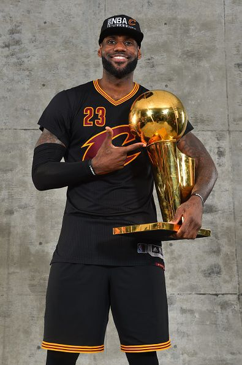

Throughout their careers athletes consistently pushed the boundaries of what was thought possible in basketball, achieving. These athletes not only only became known for their remarkable athleticism but also for leadership, dedication for game, high iq and much more. These

Lebron Raymone James Sr.
- He was born on December 30, 1984 (age 39)
- He is 6ft 9in (2.06m)
- He was on the Cleveland Cavaliers from 2003-2010
- The Miami Heat from 2010-2014
- Back to Cleveland from 2014-2018
- Currently playing for the Los Angeles Lakers 2018-Present
- He is currently the oldest player in the NBA

Micheal Jeffrey Jordan
- He was born February 17, 1963 (age 61)
- He is 6 ft fin (1.98m)